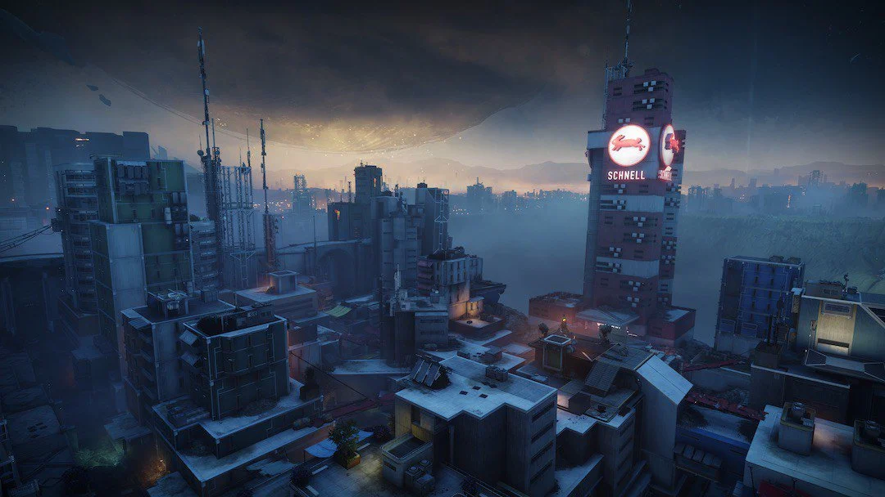

과거의 고통
데스티니 가디언즈의 4번째 확장팩 검은 무기고에서 추가된 레이드. 지구에서 벌어지는 몰락자 레이드다.
분명 멀쩡히 남아있는 최후의 도시를 기반으로 한 레이드지만, 핵심 요소인 검은 무기고 관련 컨텐츠들이 NPC 에이다-1을 제외하고 모조리 데스티니 콘텐츠 금고로 들어가 버린 탓에
이 레이드도 금고에 들어가 버렸다. 사실 검은 무기고의 요소들이 외전에 가까운 스토리였다보니...
검은 무기고의 에이다-1과 신뢰관계를 쌓아가던 중, 수호자들은 검은 무기고의 서책을 찾아오는데 이 책은 곳곳이 훼손되어 있는 상태였다.
에이다는 이런 일을 벌인 이는 몰락자 범죄조직 켈의 재앙의 우두머리인 '야생마 시빅스'이며,
그가 현재는 지구에 있는 검은 무기고의 보물을 훔치려 한다며 이를 막아줄 것을 요청한다.
이후 융합의 시즌에서 막넴 구역이 '봇차 폐허'라는 빛의 가문 거주지역이 되었으며, 구석에 폭동 프라임의 잔해를 발견할 수 있다.
